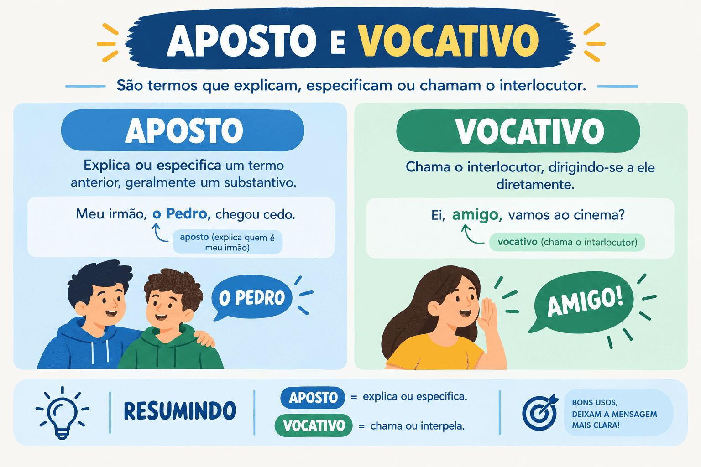

Aposto e Vocativo: conceitos, tipos, diferenças e pontuação
A análise sintática da Língua Portuguesa classifica as palavras e expressões conforme o papel que desempenham na arquitetura da oração. Enquanto os termos essenciais estruturam a base do pensamento e os termos integrantes completam sentidos verbais e nominais, o aposto atua como um termo acessório enriquecedor, e o vocativo destaca-se como um termo independente de natureza discursiva.
Embora compartilhem, em muitas construções, o uso obrigatório de pontuação (especialmente vírgulas), o aposto e o vocativo possuem finalidades comunicativas e naturezas gramaticais inteiramente distintas. O aposto relaciona-se a outro substantivo ou pronome do enunciado, enquanto o vocativo funciona como um chamamento direto direcionado ao interlocutor, sem manter ligação com o sujeito ou com o predicado.
Neste guia completo do Mestre Kira, você aprenderá as definições formais de aposto e vocativo, todos os tipos de aposto (explicativo, enumerativo, resumidor, especificativo, distributivo e oracional), as regras indispensáveis de pontuação, as diferenças em relação ao predicativo e ao sujeito, além de testar seus conhecimentos em um quiz exclusivo de 10 questões com gabarito comentado.

O que é Aposto?
O aposto é um termo de valor substantivo ou pronominal que se junta a outro termo da oração para explicar, detalhar, enumerar, resumir, especificar ou distribuir o sentido desse elemento antecedente.
Classificado sintaticamente como termo acessório, o aposto não é estritamente exigido para a completude gramatical básica da frase, mas exerce papel informativo fundamental para a clareza, a precisão referencial e a coesão textual.
Machado de Assis, fundador da Academia Brasileira de Letras, escreveu obras imortais.
- Machado de Assis: sujeito da oração e termo fundamental;
- fundador da Academia Brasileira de Letras: aposto explicativo que detalha quem é o autor citado;
- pontuação: isolado obrigatoriamente por vírgulas.
O aposto tem como núcleo um substantivo ou pronome e mantém uma relação de identidade semântica com o termo a que se refere: Machado de Assis = fundador da Academia Brasileira de Letras.
Classificação e tipos de Aposto
De acordo com a relação semântica que estabelece com o termo associado e a forma como se organiza na frase, o aposto divide-se em seis classificações principais:
1. Aposto Explicativo
Tem a função de esclarecer, caracterizar ou justificar o sentido do substantivo antecedente. Vem obrigatoriamente isolado por sinais de pontuação: vírgulas, travessões ou parênteses.
São Luís, a capital do Maranhão, destaca-se pelo seu centro histórico colonial.
A expressão “a capital do Maranhão” esclarece a identidade da cidade mencionada.
2. Aposto Enumerativo
Desdobra ou lista partes, elementos ou componentes do termo a que se refere. Costuma vir antecedido por dois-pontos ou travessão, com seus núcleos separados por vírgulas ou ponto e vírgula.
O candidato precisava levar dois documentos: o comprovante de inscrição e a cédula de identidade.
A enumeração detalha com precisão quais são os “dois documentos”.
3. Aposto Resumidor (ou Recapitulativo)
Sintetiza em uma única palavra uma série de elementos citados anteriormente na frase. É representado ordinariamente por um pronome indefinido (como tudo, nada, ninguém, todos).
Apostilas, anotações, videoaulas, exercícios, nada parecia suficiente para diminuir sua ansiedade.
O pronome “nada” atua como aposto resumidor de toda a enumeração anterior.
4. Aposto Especificativo
Individualiza um substantivo de sentido genérico (como rio, cidade, mês, rua, poeta, imperador), ligando-se a ele diretamente sem sinais de pontuação, com ou sem preposição de ligação.
O poeta Gonçalves Dias retratou a natureza brasileira com exuberância lírica.
O nome próprio “Gonçalves Dias” atua como aposto especificativo do substantivo comum “poeta”.
Atenção: o aposto especificativo é o único tipo de aposto que não admite pontuação. Separar o aposto especificativo por vírgula constitui erro grave de pontuação (ex.: *“O poeta, Gonçalves Dias, nasceu...” está incorreto).
5. Aposto Distributivo
Distribui e refere-se separadamente a elementos apresentados no enunciado, empregando correlações pronominais como este/aquele, um/outro, o primeiro/o segundo.
Carlos Drummond e Clarice Lispector marcaram a literatura: aquele pela poesia reflexiva; esta pela prosa intimista.
Os pronomes correlatos “aquele” e “esta” distribuem as referências aos dois escritores mencionados.
6. Aposto de Oração (ou Oracional)
Refere-se a toda uma oração precedente, comentando-a, sintetizando-a ou emitindo um juízo de valor sobre o fato narrado.
A equipe alcançou o índice máximo de aprovações, resultado que coroou meses de preparação exaustiva.
A expressão “resultado que coroou...” avalia e resume o fato enunciado na oração principal inteira.
O que é Vocativo?
O vocativo é um termo gramatical independente cuja função é chamar, invocar, interpelar ou atrair a atenção do interlocutor (real ou fictício) a quem se dirige o discurso.
Diferentemente dos outros termos da oração, o vocativo não mantém relação sintática de dependência com o sujeito, com o verbo ou com os complementos. Por essa razão, a moderna análise sintática o classifica como um termo de natureza eminentemente discursiva e comunicativa.
Estudantes, mantenham a calma e leiam as instruções com muita atenção!
- Estudantes: vocativo (interpelação direta dirigida aos interlocutores);
- mantenham: verbo no imperativo que inicia a oração principal;
- sujeito da oração: sujeito elíptico / desinencial (vocês).
Regra inegociável de pontuação: O vocativo deve vir sempre isolado por vírgula (ou seguido de ponto de exclamação/interrogação), independentemente de ocupar o início, o meio ou o final da frase.
No início: Amigos, este projeto transformará nossa comunidade.
No meio: Este projeto, amigos, transformará nossa comunidade.
No final: Este projeto transformará nossa comunidade, amigos.
Diferença essencial entre Aposto e Vocativo
Embora ambos possam aparecer isolados por vírgulas na oração, sua função sintático-discursiva é completamente diferente:
| Aspecto de Análise | Aposto | Vocativo |
|---|---|---|
| Relação na frase | Vincula-se a um substantivo ou pronome prévio | É independente; não se liga a outro termo sintático |
| Finalidade comunicativa | Explicar, resumir, listar ou especificar | Chamar, convocar, invocar ou interpelar |
| Pontuação | Geralmente entre vírgulas (exceto o especificativo) | Sempre e compulsoriamente isolado por pontuação |
| Presença na dissertação | Altamente recomendável para repertório e clareza | Inadequado na redação dissertativo-argumentativa |
| Exemplo clássico | Dom Pedro I, imperador do Brasil, declarou a independência. | Ouça com atenção, meu filho, os conselhos do mestre. |
Exemplo de Aposto
Lucas, meu colega de turma, foi premiado na olimpíada de física.
“Meu colega de turma” explica quem é Lucas (terceira pessoa do discurso sobre quem se fala).
Exemplo de Vocativo
Lucas, venha conferir o resultado da sua premiação na olimpíada!
“Lucas” é a pessoa com quem se fala diretamente (segunda pessoa discursiva / interlocutor).
Distinções sintáticas avançadas
Para não cair em armadilhas elaboradas pelas bancas examinadoras, fique atento a três confrontos sintáticos clássicos:
1. Vocativo vs. Sujeito
O erro mais comum consiste em confundir o vocativo inicial com o sujeito da oração:
Oração com Sujeito
Os jovens participaram da palestra sobre profissões.
“Os jovens” é sujeito; o verbo concorda com ele na 3ª pessoa do plural e não há vírgula entre sujeito e verbo.
Oração com Vocativo
Jovens, participem da palestra sobre profissões!
“Jovens” é vocativo isolado por vírgula; o sujeito gramatical da oração é desinencial (vocês).
2. Aposto Explicativo vs. Predicativo do Sujeito
Ambos podem vir entre vírgulas, mas possuem naturezas morfológicas distintas:
- Aposto explicativo: possui valor substantivo substantivo e estabelece relação de equivalência de identidade com o termo antecedente (ex.: “O Brasil, país tropical, atrai turistas”);
- Predicativo do sujeito: possui valor essencialmente adjetivo e exprime um estado, atributo transitório ou circunstancial do sujeito (ex.: “O atleta, exausto, desabou na linha de chegada”).
3. Aposto Especificativo vs. Adjunto Adnominal
Ambos se unem ao nome sem vírgula, mas a relação de sentido é distinta:
A cidade de São Paulo é monumental. / A casa de madeira foi reformada.
- de São Paulo: aposto especificativo (São Paulo = cidade);
- de madeira: adjunto adnominal (madeira indica matéria/tipo de casa, sem relação de identidade).
Aposto e Vocativo na Redação do ENEM e Vestibulares
O domínio desses dois termos reflete diretamente na avaliação das competências textuais de redações dissertativo-argumentativas:
- O poder argumentativo do Aposto: Em textos dissertativos, o aposto explicativo é uma ferramenta primordial para legitimar o repertório sociocultural. Ao citar uma figura histórica, um filósofo, uma lei ou uma obra literária, o uso do aposto contextualiza o elemento com precisão (ex.: “Zygmunt Bauman, proeminente sociólogo polonês, cunhou o conceito de modernidade líquida...”).
- A proibição do Vocativo na dissertação: A tipologia dissertativo-argumentativa do ENEM e dos principais vestibulares exige impessoalidade e distanciamento formal. O uso de vocativo (ex.: “Pense, caro leitor, sobre esse problema...”) quebra a impessoalidade e dialoga indevidamente com o corretor, gerando penalização na estrutura do texto.
Como identificar e classificar em questões?
- Observe a presença e a função do termo: O termo funciona como um chamamento ao interlocutor? Se sim, trata-se de vocativo (sempre pontuado).
- Verifique se o termo se liga a um substantivo anterior: O termo detalha, lista ou resume uma palavra já dita? Se sim, trata-se de aposto.
- Analise a pontuação do aposto:
- Não tem vírgula e nomeia um ser genérico? É aposto especificativo.
- Vem entre vírgulas explicando o nome? É aposto explicativo.
- Vem após dois-pontos detalhando elementos? É aposto enumerativo.
- É um pronome indefinido que resume uma lista? É aposto resumidor.
Quiz — Aposto e Vocativo
Questão 1 — Em “Dom Casmurro, célebre romance de Machado de Assis, retrata o ciúme obsessivo de Bentinho”, a expressão destacada classifica-se como:
Questão 2 — Na oração “Amigos e familiares, prestem muita atenção ao comunicado oficial!”, o termo inicial funciona sintaticamente como:
Questão 3 — Em “O Rio Amazonas impressiona os pesquisadores por sua colossal vazão hídrica”, a palavra “Amazonas” atua como:
Questão 4 — Na frase “Aprovados, reprovados, desistentes, ninguém permaneceu impassível diante do resultado”, o termo “ninguém” é classificado como:
Questão 5 — Assinale a oração que apresenta pontuação INCORRETA segundo as regras do padrão culto:
Questão 6 — Em “A candidata foi classificada em primeiro lugar no concurso, fato que encheu de orgulho sua família”, o termo “fato que encheu de orgulho sua família” é:
Questão 7 — Analise: “O réu, ansioso, aguardava o veredito”. O termo “ansioso” é um:
Questão 8 — Em “O diretor comprou dois equipamentos: um projetor multimídia e um notebook”, a estrutura após os dois-pontos é:
Questão 9 — “O que você deseja que eu faça, meu senhor?”. O termo “meu senhor” atua como:
Questão 10 — Considere: I. “Pelé e Garrincha foram gênios: este pela irreverência; aquele pela perfeição atlética”; II. “Esperamos, caros colegas, sua colaboração”. Os termos destacados são:
Resumo sobre aposto e vocativo
- O aposto é termo acessório que se junta a um substantivo ou pronome para explicar, enumerar, resumir ou especificar.
- O vocativo é um termo discursivo independente usado exclusivamente para chamar ou interpelar o interlocutor.
- O aposto explicativo vem sempre isolado por vírgulas, travessões ou parênteses.
- O aposto enumerativo detalha termos antecedentes, normalmente introduzido por dois-pontos.
- O aposto resumidor é expresso por pronome indefinido (tudo, nada, ninguém) que sintetiza uma série anterior.
- O aposto especificativo liga-se diretamente ao nome comum sem vírgula (ex.: o escritor Graciliano Ramos).
- O vocativo vem obrigatoriamente pontuado por vírgula em qualquer posição da oração (início, meio ou fim).
- Nunca confunda vocativo com sujeito: o sujeito concorda com o verbo, enquanto o vocativo é apenas o destinatário da fala.
- O aposto tem núcleo substantivo; o predicativo tem núcleo adjetivo (expressando atributo ou estado).
- Na redação dissertativa, o aposto enriquece o repertório sociocultural, ao passo que o vocativo deve ser rigorosamente evitado.
Conclusão
Compreender a distinção entre aposto e vocativo consolida uma base analítica segura para interpretar textos e dominar as regras mais exigentes de pontuação da Língua Portuguesa. Enquanto o aposto estabelece pontes de identidade semântica e agrega valor informativo ao texto, o vocativo sinaliza a presença viva do interlocutor no diálogo.
Nas provas de vestibulares, no ENEM e em concursos, saber classificar com precisão o aposto e aplicar a vírgula do vocativo garante pontos decisivos tanto na prova objetiva de gramática quanto na competência de norma culta da prova de redação.
Perguntas frequentes sobre aposto e vocativo
Qual é a diferença básica entre aposto e vocativo?
O aposto é um termo sintático que explica, detalha ou resume outro substantivo da oração (ex.: “Camões, grande poeta épico, escreveu Os Lusíadas”). O vocativo é um chamamento independente dirigido diretamente ao interlocutor com quem se conversa (ex.: “Poeta, recite seus versos!”).
O aposto sempre deve ser separado por vírgulas?
Não. Os apostos explicativos, enumerativos e oracionais exigem pontuação (vírgula, dois-pontos ou travessão), mas o aposto especificativo (como em “a poetisa Cecília Meireles” ou “a cidade de Curitiba”) deve ser escrito obrigatoriamente sem qualquer sinal de pontuação.
O vocativo faz parte do sujeito ou do predicado?
De nenhum dos dois. O vocativo é um termo sintaticamente independente da estrutura básica da oração, pertencendo à função comunicativa do discurso (função conativa ou apelativa da linguagem).
Como diferenciar o vocativo do sujeito no início da frase?
Pela pontuação e pelo verbo: se houver vírgula isolando o termo e o verbo estiver no imperativo ou apresentar sujeito implícito, trata-se de vocativo (“Amigos, venham aqui”). Se não houver vírgula e o verbo concordar diretamente com o termo na 3ª pessoa, trata-se de sujeito (“Os amigos vieram aqui”).
Posso usar vocativo na redação do ENEM?
Não. A redação dissertativo-argumentativa do ENEM e dos vestibulares exige distanciamento e impessoalidade. O uso de vocativo cria diálogo direto com o corretor da prova (ex.: “Veja, leitor...”), o que é penalizado na avaliação da estrutura dissertativa.
Conteúdos relacionados
- Termos Integrantes e Acessórios da Oração
- Orações Coordenadas e Subordinadas: como reconhecer e classificar
- Conjunções da Língua Portuguesa: o que são, tipos, usos e exemplos explicados
- Locuções Adverbiais: o que são, tipos e exemplos
- Sintaxe: estrutura da oração e relações entre as palavras
- Interpretação e Produção Textual
- Gramática da Língua Portuguesa: Guia Completo
- Conteúdos de Gramática — Página 2
- Conteúdos de Gramática — Página 3
- Conteúdos de Gramática — Página 4
Referências bibliográficas
- BECHARA, Evanildo. Moderna Gramática Portuguesa. 37. ed. Rio de Janeiro: Nova Fronteira, 2009.
- CEGALLA, Domingos Paschoal. Novíssima Gramática da Língua Portuguesa. 48. ed. São Paulo: Companhia Editora Nacional, 2008.
- CUNHA, Celso; CINTRA, Lindley. Nova Gramática do Português Contemporâneo. 6. ed. Rio de Janeiro: Lexikon, 2013.
- GARCIA, Othon Moacyr. Comunicação em Prosa Moderna. 27. ed. Rio de Janeiro: Editora FGV, 2010.
- ROCHA LIMA, Carlos Henrique da. Gramática Normativa da Língua Portuguesa. 49. ed. Rio de Janeiro: José Olympio, 2011.
Explore Outros Conteúdos
Continue seus estudos acessando outras seções do site Mestre Kira: